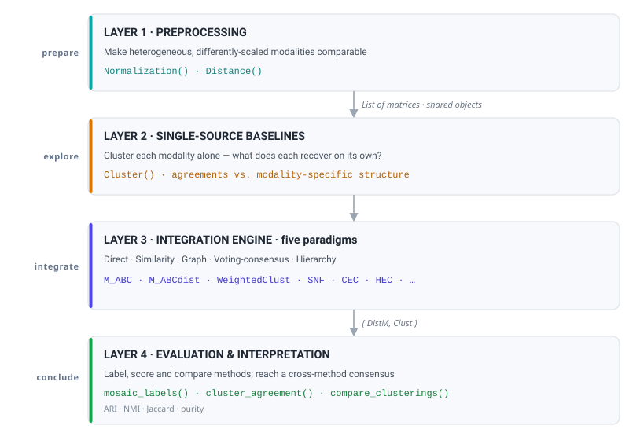

An umbrella framework for multi-source and multi-omics clustering in R. One interface, many methods, and a complete workflow, from raw modalities to interpretable subgroups.
MosaiClusteR (MoSaIC: Multi-Omics Similarity Aggregation and Integrative Clustering in R) treats every data modality (transcriptome, methylome, proteome, fingerprints, targets, imaging, clinical) as one tile of a larger picture, and assembles those tiles into a single coherent mosaic of sample structure. It unifies a large family of integrative clustering algorithms behind one consistent list-of-matrices interface, and wraps them in a complete analysis framework: preprocessing, then single-source baselines, then integration across five paradigms, then evaluation and interpretation.
No single algorithm is best across all data regimes, so MosaiClusteR gathers many methods on the same footing and gives you the tooling to choose between them: cluster-number selection, agreement metrics, visual comparison, cluster characterisation, and, for omics, pathway and gene-set interpretation. It also introduces a data-nugget feature-weighting scheme that offers a stable, big-data-friendly alternative to variance weighting.
Table of contents
- Why MosaiClusteR
- Installation
- 60-second quick start
- The MoSaIC framework of use
- Method catalogue (every method, and when to use it)
- Spotlight: M-ABC and data nuggets
- Evaluation and comparison toolkit
- Datasets
- Design principles
- Citation
- References
Why MosaiClusteR
Multi-omics and other multi-source studies measure the same objects (patients, tumours, compounds, cells) through several heterogeneous lenses. No single modality tells the whole story, and the many integration algorithms in the literature live in scattered packages with incompatible inputs and outputs. MosaiClusteR fixes this:
-
One input format. Every method takes a
Listof matrices over the same shared objects, with objects (samples) in rows and features in columns (n x m), the same convention across the entire package, including the M-ABC family. Distance-matrix inputs (type = "dist") are orientation-free. -
One output contract. Every method returns at least
DistM(a dissimilarity matrix) andClust(a hierarchical-clustering object), so results are directly comparable and composable. - Five paradigms, one roof. Direct, similarity-based, graph-based, voting-based consensus, and hierarchy-based integration. Pick the right tool without leaving the package.
- A full workflow, not only algorithms. Normalisation, distances, partition extraction, agreement metrics (ARI, NMI, Jaccard), and method comparison are built in.
Installation
# the stable release, from CRAN
install.packages("MosaiClusteR")
# or the development version
# install.packages("remotes")
remotes::install_github("lucp12891/MosaiClusteR")MosaiClusteR ships C++ kernels for the M-ABC family, so a C/C++ toolchain is needed to build from source (on Windows install Rtools; on macOS the Xcode command-line tools). Every method has a pure-R fallback, so the package still runs if a kernel is unavailable. A few methods rely on suggested packages that are loaded only when you call them:
# optional, enables extra methods and distances
install.packages(c("SNFtool", "datanugget", "WCluster", "lsa", "analogue", "FactoMineR"))| If you want | Install (Suggests) |
|---|---|
Similarity Network Fusion (SNF) |
SNFtool |
| The reference data-nugget engine |
datanugget, WCluster
|
| Cosine, chi-squared, or MCA distances |
lsa, analogue, FactoMineR
|
60-second quick start
library(MosaiClusteR)
data(mosaic_toy) # two sources, 60 shared objects, 3 planted groups
L <- mosaic_toy$List # a list of matrices, objects in rows
truth <- mosaic_toy$truth
## Integrate: every method shares one interface, so swapping it changes the paradigm
fit <- SNF(L, type = "data", distmeasure = c("euclidean", "euclidean"),
normalize = c(FALSE, FALSE), method = list(NULL, NULL))
labels <- mosaic_labels(fit, k = 3) # pull a flat partition from any fitted result
cluster_agreement(labels, truth) # ARI, NMI, Jaccard, purity vs ground truth
## Same score from a different paradigm, e.g. a neighbourhood method
cluster_agreement(NEMO(L, k = 3)$cluster, truth)
## Compare two integrations directly
compare_clusterings(fit$DistM,
ADC(L, distmeasure = "euclidean", normalize = FALSE)$DistM, NC = 3)That is the whole loop: integrate, extract, evaluate, compare. The same three lines work for any of the methods below.
The MoSaIC framework of use
MosaiClusteR is organised as a four-layer pipeline. You can enter at any layer, and every layer speaks the same List -> {DistM, Clust} language.

Choosing a layer-3 method (decision shortcut):
-
Want a fast, transparent baseline? Use Direct (
ADC) or Weighted (WeightedClust). -
Sources are noisy and complementary, at genomic scale? Use Similarity (
SNF). -
Want stability under resampling, from a resampling-based ensemble? Use Voting consensus (
M_ABC,CEC,EvidenceAccumulation). -
Care about the hierarchy or dendrogram structure itself? Use Hierarchy (
HEC). -
Have very large N or heavy-tailed data? Set
weighting = "nugget"inside the M-ABC family.
Method catalogue
Legend. A named function is implemented in this package. A dagger (†) marks a method that needs an external graph-partitioning executable (METIS) or MATLAB, which is not bundled. A plain dash in the reference column marks methods that are interoperable with, or on the roadmap via, a reference package. All methods share the
List -> {DistM, Clust}contract and take the same objects-in-rows input.
1. Direct clustering: combine first, then cluster
| Method | Function | What it does | When it is useful | Ref |
|---|---|---|---|---|
| ADC (Aggregated Data Clustering) | ADC |
Concatenate all tiles into one wide matrix, then apply one distance and one hierarchy | Simplest baseline; when modalities are commensurate and you want a transparent reference | Fodeh 2013 |
| ADEC (Aggregated Data Ensemble Clustering) | ADEC |
ADC plus resampling of features and cut-points to a co-clustering matrix | When ADC is unstable and you want a stability layer | Fodeh 2013 |
2. Similarity-based: fuse object-by-object similarity
| Method | Function | What it does | When it is useful | Ref |
|---|---|---|---|---|
| Weighted Clustering | WeightedClust |
Convex combination sum(wk Dk) over a weight grid |
When you want to tune and inspect the trade-off between sources | Perualila-Tan 2016 |
| SNF (Similarity Network Fusion) | SNF |
Cross-diffuse per-source similarity networks into one fused network | Noisy, complementary, genomic-scale sources; the multi-omics workhorse | Wang 2014 |
| WonM (Weighting on Membership) | WonM |
Consensus co-membership across many cut-points k | When you do not want to commit to a single k | - |
| NEMO (Neighborhood-based Multi-Omics) | NEMO |
Locally-scaled kNN affinities averaged over the omics measuring each pair, then spectral clustering | When samples are missing some modalities (no imputation needed) | Rappoport 2019 |
| Spectral clustering | spectral_clustering |
Normalised-Laplacian embedding plus k-means on any affinity | Final clusterer for fused or similarity matrices (SNF, NEMO, Spectrum) | Ng 2002 |
| ab-SNF | - | SNF with association or variance feature weights | When a few features carry the signal and should drive the network | Zhang 2022 |
| CIMLR / rMKL-LPP | - | Multi-kernel similarity learning | Many heterogeneous kernels; learn their weights | Zhang 2022 |
3. Graph-based: partition an ensemble (hyper)graph
| Method | Function | What it does | When it is useful | Ref |
|---|---|---|---|---|
| CSPA / HGPA / MCLA |
EnsembleClustering † |
Cluster-ensemble via (hyper)graph partitioning | Combining many base partitions into one stable consensus | Strehl 2002 |
| HBGF (Hybrid Bipartite Graph Formulation) | HBGF |
Partition an object-to-cluster bipartite graph (SVD plus k-means) | Ensembles where objects and clusters co-embed naturally | Fern 2004 |
| Clustering Aggregation (Balls / Agglo / Furthest) | ClusteringAggregation |
Minimise pairwise disagreement cost | When you have several partitions and want the median one | Gionis 2007 |
4. Voting-based consensus: let partitions vote
| Method | Function | What it does | When it is useful | Ref |
|---|---|---|---|---|
| M-ABC (Multi-source Aggregating Bundles of Clusters) | M_ABC |
Per-source bootstrap of feature bundles to a consensus co-clustering dissimilarity | High-dimensional sources, where signal hides in feature subsets; stable under resampling; supports data-nugget weighting | Amaratunga 2008 |
| M-ABCdist | M_ABCdist |
M-ABC that accumulates distances (keeps geometry), then fuses | When you want continuous dissimilarities rather than co-clustering counts | Amaratunga 2008 |
| M-ABCdeep (deep-learning ABC) |
M_ABCdeep / ABCdeep.SingleInMultiple
|
M-ABC whose base clustering is a neural autoencoder embedding plus latent clustering; self-contained R network, no Python or torch | Nonlinear or complex per-source structure; when a learned embedding beats a raw distance | Amaratunga 2008 |
| CEC ((Consensus) Ensemble Clustering) | CEC |
Incidence accumulation across sources and cut-points | A solid, weight-aware consensus baseline | Fodeh 2013 |
| CVAA / W-CVAA | CVAA |
Cumulative voting aggregation (and weighted) | Aligning and merging many partitions by voting | Saeed 2012/2014 |
| IVC / IPVC / IPC | ConsensusClustering |
Iterative (probabilistic) voting consensus | Iteratively refine a consensus labelling | Nguyen 2007 |
| EA (Evidence Accumulation) | EvidenceAccumulation |
Co-association matrix across partitions (SL / SL-agnes / MST) | Classic, parameter-light consensus | Fred 2005 |
| CTS / SRS / ASRS | LinkBasedClustering |
Link-based cluster ensembles (CTS and SRS pure-R; ASRS needs MATLAB) | When pairwise link similarity refines the consensus | Iam-On 2010 |
5. Hierarchy-based: consense the trees themselves
| Method | Function | What it does | When it is useful | Ref |
|---|---|---|---|---|
| HEC (Hierarchical Ensemble Clustering) | HierarchicalEnsembleClustering |
Aggregate cophenetic distances to the closest ultrametric (Floyd-Warshall) | When the dendrogram structure across sources is the object of interest | Zheng 2014 |
| EHC (Ensemble for Hierarchical Clustering) |
EHC † |
Graph aggregation of dendrogram association strengths | Graph-flavoured hierarchical consensus | Hossain 2012 |
6. Model-based and factor integration
| Method | Function | What it does | When it is useful | Ref |
|---|---|---|---|---|
| intNMF (integrative NMF) | intNMF |
Shared non-negative basis W plus per-omic Hk; consensus clustering of W
|
Low-rank, parts-based integration; non-negative data | Chalise 2017 |
| LUCID |
LUCID ‡ |
Latent clusters jointly from exposures, omics and an outcome (quasi-mediation, EM) | Supervised subtyping where an outcome should shape the clusters | Zhao 2024 |
| iCluster / iClusterPlus / iClusterBayes | - | Joint latent-variable integration, mixed data types, feature selection | Zhang 2022 | |
| moCluster / MOFA / JIVE | - | Low-rank or factor decomposition of shared and individual variation | Zhang 2022 |
‡ LUCID wraps the LUCIDus package (a Suggests dependency).
Data reduction and weighting
| Tool | Function | Role |
|---|---|---|
| Data nuggets |
create_data_nuggets, nugget_feature_weights
|
Compress N observations into M weighted representatives; derive stable feature weights for M-ABC |
| Data-nugget clustering |
nugget_cluster, Wkmeans, Whclust
|
Cluster the compressed representatives directly (weighted k-means or weighted Ward), then map back to objects, for big-data clustering |
Spotlight: M-ABC and data nuggets
M-ABC generalises the single-source Aggregating Bundles of Clusters algorithm (Amaratunga et al. 2008) to many heterogeneous sources. For each source it repeats, numsim times: bootstrap the samples, draw a weighted subsample of features, cluster, and record co-clustering. Per-source evidence is accumulated into one consensus dissimilarity, then clustered.
The feature subsample is the heart of the method, and how features are weighted matters:
weighting |
Score behind the selection probability | Best when |
|---|---|---|
"var" |
feature variance (classic) | signal lives in high-variance features |
"cv" |
coefficient of variation | scale-free relative dispersion |
"nugget" |
data-nugget between-group weighted variance | large N, heavy tails, outliers: signal that resists noise |
"equal" |
flat | ablation or no prior |
Why data nuggets? A data nugget summarises a group of observations by a centre, a weight (how many observations it represents) and a scale (its internal spread). Building nuggets over the samples and asking which features separate the nugget centres yields a feature-importance score that rewards real between-group signal while discounting within-nugget noise, and it scales to very large N because it works on M representatives with M far below N.
# Inspect the nugget compression and the weights it induces
# (objects are in rows, so pass the source directly: no transpose)
dn <- create_data_nuggets(L[[1]], max_nuggets = 25)
dn # 60 obs -> up to 25 nuggets (reduction reported)
w <- nugget_feature_weights(dn, type = "between") # stable feature weights
# Drop straight into M-ABC
M_ABC(L, weighting = c("nugget", "nugget"),
nugget_args = list(max_nuggets = 25, seed = 1))If the reference datanugget package is installed you can swap in its engine with create_data_nuggets(x, engine = "datanugget"); otherwise the built-in native engine is used (no extra dependency).
Evaluation and comparison toolkit
mosaic_labels(fit, k = 3) # extract a partition from any result
cluster_agreement(a, b) # ARI, NMI, pairwise Jaccard
compare_clusterings(D1, D2, NC = 3) # cluster two dissimilarities and comparecluster_agreement() rule of thumb (ARI): above 0.90 excellent, 0.75 to 0.90 good, 0.50 to 0.75 moderate, below 0.50 weak.
Downstream analysis and visualisation
The package also ships a full downstream analysis suite (Layer 4). These guard their heavier dependencies via Suggests and raise an informative error if one is missing.
| Purpose | Functions | Needs |
|---|---|---|
| Cross-method comparison |
ReorderToReference, SimilarityMeasure, CompareSilCluster, CompareSvsM, CompareInteractive, SelectnrClusters
|
base / plotrix
|
| Source weighting |
DetermineWeight_SilClust, DetermineWeight_SimClust
|
base |
| Cluster navigation |
FindCluster, FindElement, SharedComps, TrackCluster, ChooseCluster
|
base |
| Characterisation |
CharacteristicFeatures, FeatSelection, FeaturesOfCluster
|
base |
| Dendrograms and colours |
ComparePlot, Cyclogram, ClusterPlot, ColorPalette, LabelPlot
|
circlize, plotrix
|
| Heatmaps and boxplots |
HeatmapPlot, HeatmapSelection, SimilarityHeatmap, BoxPlotDistance
|
gplots, ggplot2, gridExtra
|
| Feature and profile plots |
BinFeaturesPlot_SingleData, BinFeaturesPlot_MultipleData, ContFeaturesPlot, ProfilePlot
|
plotrix, Biobase
|
| Differential expression |
DiffGenes, DiffGenesSelection, FindGenes
|
limma |
| Pathway analysis |
PathwayAnalysis, Pathways, PathwaysIter, PathwaysSelection, PreparePathway, PlotPathways, Geneset.intersect
|
MLP, biomaRt, org.Hs.eg.db
|
| Shared genes, paths, features |
SharedGenesPathsFeat, SharedSelection, SharedSelectionLimma, SharedSelectionMLP
|
base / limma / MLP
|
Datasets
-
mosaic_toy: a bundled two-source example (60 shared samples, 3 planted groups) for instant experimentation and the test suite. -
mosaic_sim(): generate your own multi-source data with controllable group structure, informative-feature counts and effect size.
The methods are designed for, and have been evaluated on, multi-omics benchmarks in the spirit of the LUCIDus simulated-HELIX data, TCGA subtype cohorts, and the MCF7 compound, fingerprint and transcriptome panel used in the companion manuscript.
Design principles
- Source-agnostic. Methods do not care whether a tile is RNA, methylation, fingerprints or clinical scores.
-
Composable. A uniform
{DistM, Clust}return makes any two methods comparable and any result re-usable. - Honest dependencies. The core is pure R; heavyweight methods degrade gracefully when an optional package is absent.
-
Tested. A
testthatsuite covers the data-nugget engine, every weighting scheme, the M-ABC family, distances and metrics.
Citation
@Manual{MosaiClusteR2026,
title = {MosaiClusteR: An Umbrella Framework for Multi-Source and
Multi-Omics Clustering},
author = {Osang'ir, Bernard Isekah and Van Moerbeke, Marijke and
Claesen, Jürgen and Gupta, Surya and Cabrera, Javier and
Amaratunga, Dhammika and Shkedy, Ziv},
year = {2026},
note = {R package version 1.0.0},
url = {https://github.com/lucp12891/MosaiClusteR}
}References
- Amaratunga, Cabrera and Shkedy (2008). Exploration and Analysis of DNA Microarray and Other High-Dimensional Data. Wiley.
- Cherasia, Cabrera, Fernholz and Fernholz (2023). Data Nuggets in Supervised Learning. In Robust and Multivariate Statistical Methods, Springer, 429 to 449.
- Wang et al. (2014). Similarity Network Fusion. Nature Methods 11:333 to 337.
- Perualila-Tan et al. (2016). Weighted similarity-based clustering.
- Fodeh, Punch and Tan (2013). On unifying multi-source information. Proteins.
- Zheng, Chen and Zheng (2014). A novel approach for hierarchical ensemble clustering. IEEE TPAMI.
- Strehl and Ghosh (2002); Fern and Brodley (2004); Gionis et al. (2007); Nguyen and Caruana (2007); Fred and Jain (2005); Iam-On et al. (2010); Saeed et al. (2012/2014); Hossain et al. (2012).
- Zhang, Zhou, Xu and Liu (2022). Integrative clustering methods for multi-omics data. WIREs Comput Stat 14:e1553. (SNF, NEMO, iCluster family, ab-SNF, CIMLR review.)
- Zhao, Jia, Goodrich and Conti (2024). LUCIDus. The R Journal 16(2).
MosaiClusteR is an open, extensible framework. Contributions of new integration methods, distances, and evaluation tools are very welcome.